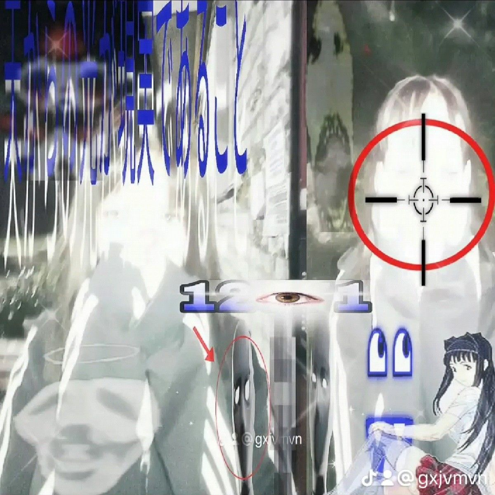

she left five things behind.
a node. a signal. a name. a garden. a return.
enter them here.
she did not disappear.
disappearing implies something to disappear from.
you followed her path.
you read her words. you heard the broadcast.
you are not the same as when you started.